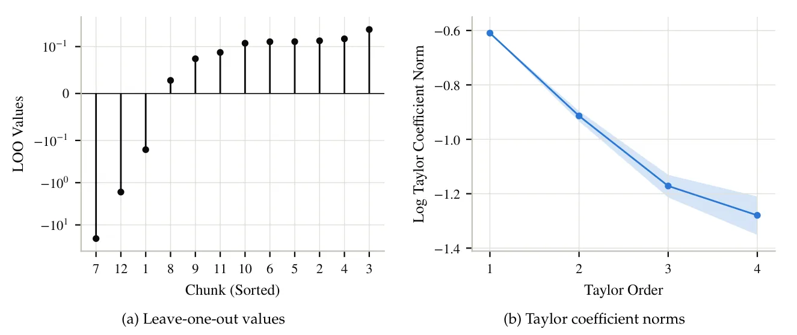
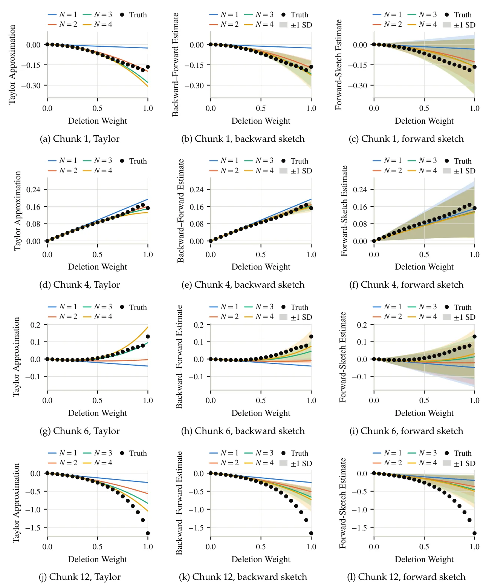
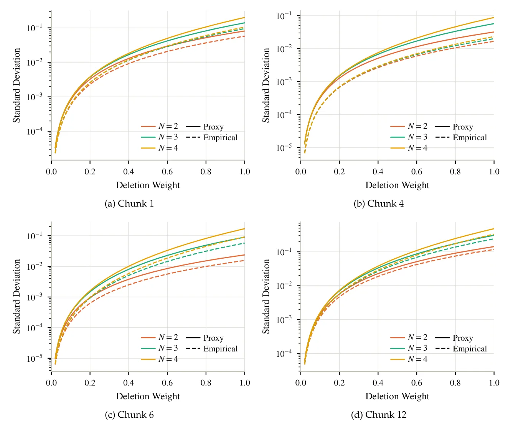

O Problema da Atribuição de Contexto
Em sistemas de IA modernos, especialmente aqueles que utilizam Retrieval-Augmented Generation (RAG) ou processam documentos longos, é crucial entender quais partes do contexto (o prompt) realmente influenciaram a saída gerada. Isso serve para atribuir crédito a fontes externas, identificar informações redundantes que podem ser podadas para economizar tokens e até detectar ataques de envenenamento de dados. O problema formal é quantificar, contrafactualmente, como a remoção de partes do contexto alteraria o comportamento do modelo.
Uma abordagem padrão é a atribuição Leave-One-Out (LOO). Dado um prompt com n tokens, queremos saber o valor de uma função de medição escalar ϕ quando cada token i é removido individualmente. Se ϕ for, por exemplo, o log-probabilidade da resposta gerada, o valor LOO para o token i é a diferença entre a pontuação do prompt completo e a pontuação do prompt sem o token i. A solução trivial é executar o modelo n vezes, removendo um token de cada vez. Para prompts longos, isso é computacionalmente proibitivo.
Limitações dos Métodos Existentes
Abordagens anteriores tentam contornar o custo高昂 das avaliações exatas usando modelos substitutos (surrogate models), escores baseados em gradientes ou heurísticas diversas. Embora rápidas, essas técnicas não oferecem garantias formais de precisão para modelos de linguagem modernos. Elas frequentemente falham quando há interações não-lineares fortes entre os tokens ou quando a linearização local subestima o impacto real da remoção de um contexto.
O paper de Liaw, Mehta, Velegkas e Zhou, pesquisadores do Google Research e da Yale University, propõe uma solução diferente: um algoritmo probabilístico com garantias rigorosas. O objetivo não é apenas ser rápido, mas garantir que a estimativa dos valores LOO esteja dentro de uma margem de erro ε com probabilidade constante, usando um número significativamente menor de chamadas ao modelo.
A Ideia Central: Sketching e Estabilidade
O algoritmo baseia-se na expansão de Taylor da função de medição ϕ em torno do zero (onde todos os tokens estão desativados). Os coeficientes dessa expansão são tensores que capturam as interações de ordem superior entre os tokens. A chave teórica do paper é a propriedade de 'estabilidade'. Uma função é considerada estável se os normas dos seus tensores de Taylor decaem suficientemente rápido. Isso significa que as interações de alta ordem entre muitos tokens são pequenas, permitindo que possamos aproximar a função com precisão usando apenas ordens baixas da expansão.
Os autores demonstram que, sob essa suposição de estabilidade, é possível estimar todos os valores LOO com erro ε usando apenas O(sqrt(log(1/ε))/ε) chamadas ao modelo. Isso é uma melhoria significativa em relação a métodos anteriores que poderiam exigir O(1/ε²) chamadas. Além disso, eles provam um limite inferior Ω(sqrt(log(1/ε))/ε), mostrando que seu algoritmo é quase ótimo em termos de complexidade de consulta.

Mecanismo: Sketching de Circuitos Aritméticos
Para implementar essa estimativa, os autores utilizam técnicas de sketching de circuitos aritméticos. Em vez de calcular os coeficientes de Taylor diretamente, que é intratável, eles usam amostragem aleatória para estimar projeções desses coeficientes. A abordagem ingênua seria aplicar diferenciação direta (forward differentiation) ao circuito do modelo. No entanto, isso resulta em alta variância nas estimativas, exigindo muitas amostras para convergir.
A inovação técnica principal é o que eles chamam de 'Backward-Forward Sketching'. Eles observam que é possível aplicar a diferenciação direta ao circuito de backpropagação. A backpropagação calcula exatamente o gradiente de primeira ordem. Ao aplicar sketching de ordem superior a este circuito auxiliar, eles conseguam estimar fatias específicas dos tensores de Taylor (correspondentes a cada token removido) com variância muito menor do que o método de forward-only.

Por que Backward-Forward é Melhor?
A redução de variância é crucial. No sketching padrão, a variância do estimador escala com a norma máxima do tensor. No sketching backward-forward, a variância escala com a soma das normas dos vetores de fatia. Intuitivamente, ao esboçar fatias disjuntas em vez do tensor inteiro, reduzimos a quantidade de aleatoriedade introduzida pelo processo de amostragem. Isso permite que o algoritmo alcance a mesma precisão com menos chamadas ao modelo.
O algoritmo estima primeiro uma medida proxy da variância para cada token. Com base nisso, ele identifica os tokens com maior incerteza e avalia esses casos específicos de forma exata (ou com mais amostras), enquanto usa estimativas mais baratas para os tokens menos sensíveis. Essa estratégia adaptativa, combinada com a redução de variância do sketching, é o que permite atingir o limite de complexidade otimizado.

Resultados Empíricos e Limitações
Os autores validam sua abordagem no modelo Llama-3.2-1B. Eles verificam empiricamente que a função de medição do modelo exibe o decaimento de coeficientes esperado pela teoria da estabilidade. Isso é importante, pois a garantia teórica só se aplica se a estabilidade for verdadeira. Os resultados mostram que o algoritmo estima os valores LOO com precisão competitiva, superando os métodos de sketching forward-only em termos de variância para o mesmo orçamento de computação.
É importante notar as limitações. O método assume que a função de medição é estável. Embora os experimentos sugiram que LLMs modernos satisfazem essa condição, não é uma garantia universal para todos os modelos ou todas as funções de medição. Além disso, o paper foca em atribuição leave-one-out; extensões para remoção simultânea de grupos de tokens são mencionadas, mas o foco principal é a remoção individual. O algoritmo também requer a estimação dos coeficientes de Taylor, o que introduz uma complexidade adicional na implementação prática.
Conclusão
Este paper oferece uma contribuição técnica sólida para a área de interpretabilidade de modelos de linguagem. Ao combinar teoria de sketching, análise de circuitos aritméticos e a propriedade de estabilidade, os autores fornecem um método com garantias formais de precisão e eficiência. Para desenvolvedores e pesquisadores que precisam analisar a influência de contextos em LLMs sem o custo proibitivo de reavaliações exaustivas, essa abordagem representa um avanço significativo em termos de fundamentação teórica e eficiência computacional.
O que fica
- Atribuição Leave-One-Out (LOO) exata requer n chamadas ao modelo; o novo método reduz isso para O(sqrt(log(1/eps))/eps).
- A técnica central é aplicar diferenciação direta ao circuito de backpropagação, reduzindo a variância do estimador.
- O algoritmo depende da propriedade de estabilidade dos coeficientes de Taylor da função de medição.
- Resultados empíricos no Llama-3.2-1B validam a teoria, mostrando decaimento consistente dos coeficientes.
Paper original: Sketching Language Models for Context Attribution
Comentários
Nenhum comentário ainda. Seja o primeiro.